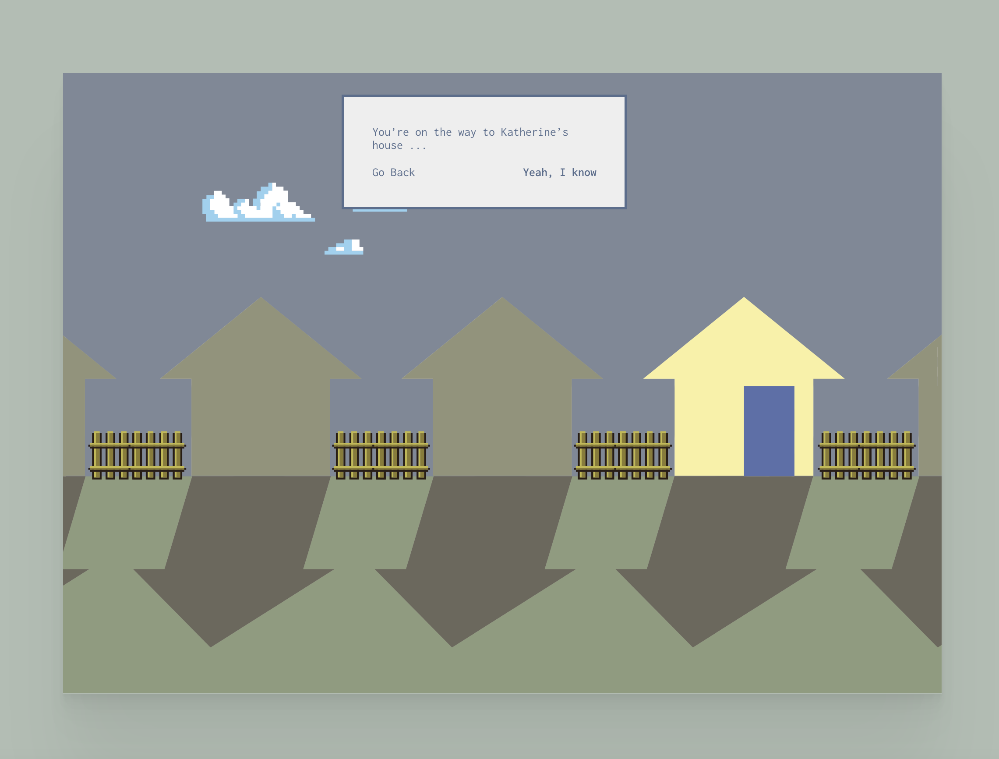

tokonoma.artsubstitute.net
게임 속 한 장면 같은 디자인이다. 아주 간단한 집 모양의 도형들 위로는 두 개의 선택지가 놓여져있는 메시지 창이 있다. 모바일 화면 사이즈로 축소시켰을 때에는 색상, 구성 등의 변화는 없고 너비만 화면에 맞추어 줄어든다.
노란색 집 안으로 들어서면 좌측에는 여러 액자들이 놓여져있고 우측에는 티비가 놓여져있다. 화면 하단에 you sit down and take a look the wall. 이라는 문구가 표시된다. 배치되어있는 모든 사물이 1점 투시로 이루어져 있어 간단하고 아기자기한 느낌을 주지만 전체적으로 칙칙한 색상은 어두운 분위기를 준다.
좌측에 걸려있는 액자들을 클릭하면 확대된 화면으로 전환된다.
각각의 액자들을 클릭하면 get a closer look 이라는 메시지가 출력되는데 메시지를 클릭하면 사진을 큰 화면으로 확인할 수 있다. 추리 게임에서 단서들을 확인할 때 사용하는 기능 같아 흥미로웠다.
우측에 놓여진 티비의 재생 버튼을 클릭하면 동영상이 재생된다. 시간이 지날 때마다 사진이 점점 분해되며 소리는 나오지 않는다.